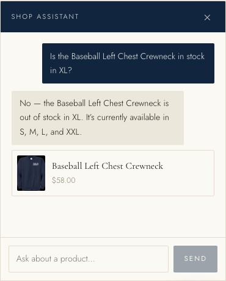
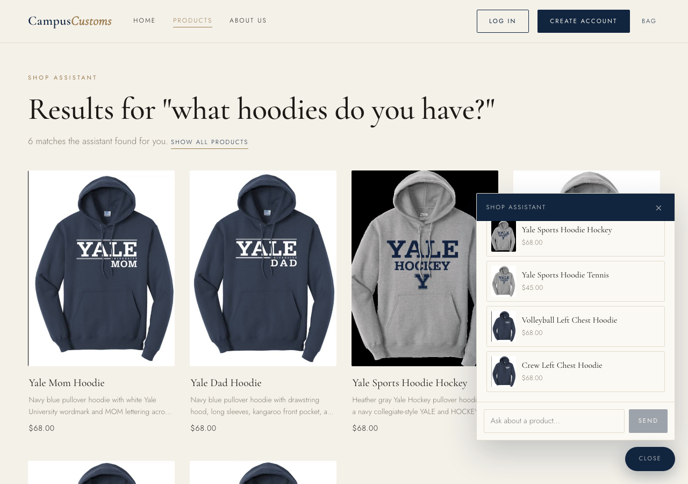
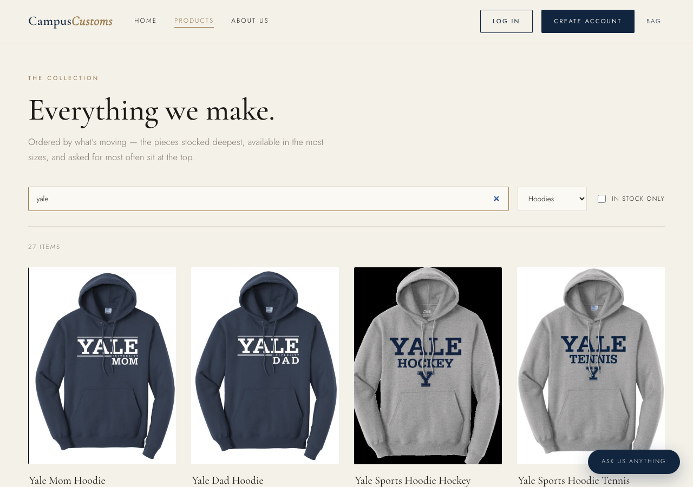

The chat checks live inventory levels
Asked "Is the Baseball Left Chest Crewneck in stock in XL?", the
assistant answers from the database — out of stock in XL,
available in S, M, L and XXL. That matches the real
inventory table exactly (XL quantity is 0), so the agent is
reading live stock, not guessing.

The dynamic chat search updates the page
Asking "what hoodies do you have?" in the chat makes the agent search the catalogue and the website re-renders: the page shows "Results for 'what hoodies do you have?'" with 6 matching product cards, each clickable through to its detail page. The chat returns structured matches; the front end renders them on the page.

Product filter & search bar
The Problem 9 usability feature: the Products page has a live filter bar. Here a "yale" search combined with the "Hoodies" category narrows the grid instantly, with an "in stock only" toggle alongside — letting shoppers browse 102 products without needing the chat.
